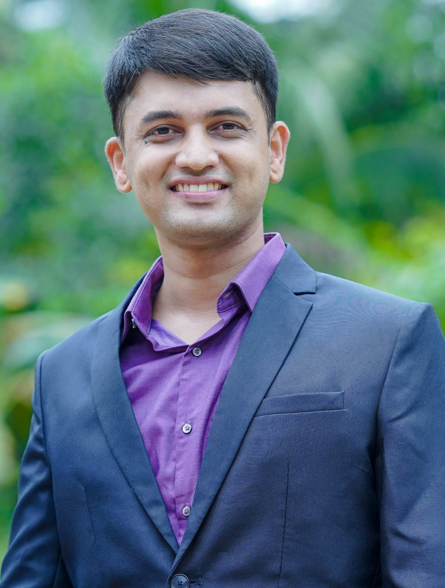

General Surgery
Thoughtful assessment and surgical care for common and complex conditions.
Consultations in Mangalore & Dakshina Kannada
General, Laparoscopic & LASER Surgeon
Surgical care with clear guidance from first consultation to recovery.
An editorial white canvas lets portrait scale, controlled overlap and negative space create the premium atmosphere.


Core services
Large, quiet service panels create a magazine-like transition from portrait-led hero to practical patient information.
Thoughtful assessment and surgical care for common and complex conditions.
Minimally invasive keyhole procedures when clinically suitable.
Selected LASER procedures after careful evaluation.
Evaluation and care for selected vascular concerns.
About
The layout uses asymmetrical image scale rather than decorative background effects, giving the page a confident consultant profile feel.
Best Outgoing Student Award
BLS and ACLS provider
Patient philosophy
A deep navy editorial break gives the homepage rhythm and contrast without using decorative motifs.

Ready to consult
Call or WhatsApp to schedule an appointment. Prior booking is required.